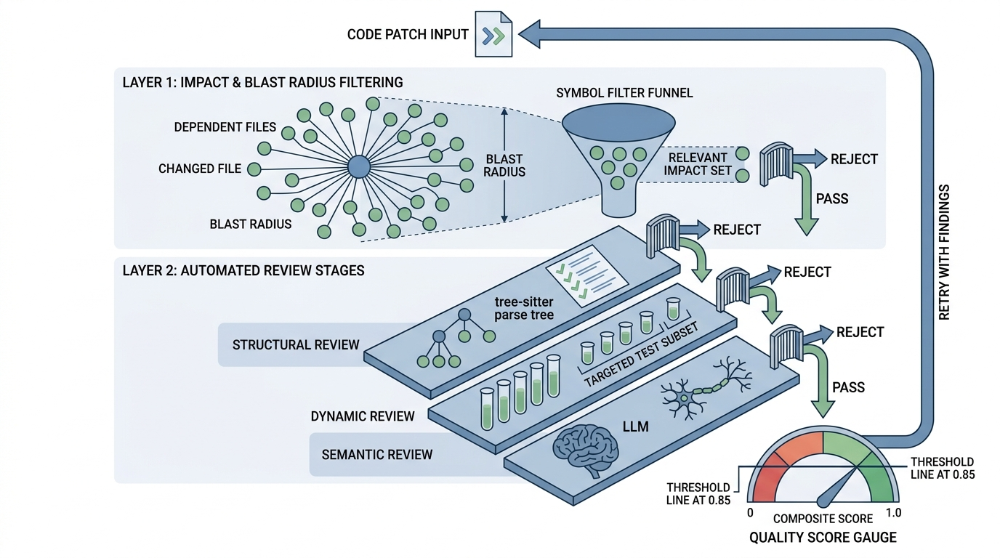

"I changed one line in the base class. Fourteen services went down. The on-call engineer described the experience as 'educational.'"
A Refactoring Tool With Insufficient Graph Coverage
The Big Picture
A one-line signature change in a base class can silently invalidate 200 downstream files, and without a way to trace that ripple before you merge, you will not discover the damage until production pages start failing. Impact analysis computes
the set of files, functions, and tests affected by a proposed change, using the
dependency graph as a propagation medium. Patch review then evaluates whether the
change handles all affected sites correctly. Together, these two capabilities
transform code generation from "produce text that looks right" to "produce text
with quantified risk." This section builds both systems from scratch, starting with
graph-theoretic foundations and arriving at a practical review pipeline that combines
static analysis, test execution, and large language model (LLM)-based semantic review.
1. Change Propagation in Dependency Graphs
In 2017, a routine update to a widely shared utility module at a major tech company cascaded through 14 production services before anyone realized a single renamed parameter was the root cause. The cost of that blind merge was three hours of partial downtime and a full week of post-mortem meetings. The technique that prevents such failures is change propagation analysis, which traces every downstream consumer of a modified file before the change ever lands.
Section 16.1 introduced the edit graph: a directed acyclic graph (DAG) of
planned edits with dependency edges. Impact analysis inverts this perspective.
Instead of asking "what order should I generate edits?", it asks "given a change to
file \(f\), which other files might break?" The answer is the transitive closure
(the set of all nodes reachable by following edges forward through any number of intermediate nodes)
of the reverse dependency graph rooted at \(f\).
Formally, let \(G = (V, E)\) be the dependency graph where \(V\) is the set of files and
\((u, v) \in E\) means "file \(v\) imports from file \(u\)." The blast radius of
a change to file \(f\) is the set of files reachable from \(f\) in \(G\):
The blast radius is a precise graph-theoretic quantity: the set of all nodes reachable
from a changed file by following dependency edges forward (from provider to consumer).
A breadth-first or depth-first traversal computes it. Any file in this set could
observe the change and break, so the blast radius defines the upper bound on what a
reviewer must consider. The mechanism is transitive closure: if A imports B and
B imports C, changing C puts both A and B in the blast radius, even though A never
references C directly. Use the blast radius as a quick, coarse safety check before
merging. When it is too large to review manually, switch to the finer-grained impact
set (described below), which filters down to files that actually reference the
specific symbols you changed.
$$
\text{blast}(f) = \{v \in V \mid \exists \text{ path } f \to v \text{ in } G\}
$$
Refining the Blast Radius
The blast radius is an upper bound on the set of files that could break. Not
every file in the blast radius will actually break; only those that reference the
specific symbols being changed are truly at risk. We refine the blast radius into
the impact set by filtering for files that actually use the changed symbols:
where \(S\) is the set of symbols modified in file \(f\) and \(\text{refs}(v)\) is the set
of symbols that file \(v\) references from \(f\) (directly or transitively). This
refinement often reduces the set by 60-80% in practice, focusing attention on the files that
actually need inspection.In short: The blast radius tells you the worst case; the impact set tells you the real case.
Mental Model
Think of the blast radius like a recall notice for a single ingredient at a food
manufacturer. If the flour supplier reports a contamination, the blast radius is
every product line that uses flour anywhere in its recipe chain, even indirectly
(a cake mix uses flour; a frozen dinner uses the cake mix). That could be hundreds
of products. The impact set is the subset where the specific contaminated batch
actually shipped: only the production runs that received lot #4417. The recall team
does not pull every flour-containing product off shelves; they trace the specific lot
through the supply chain and pull only the affected items. Similarly, impact analysis
traces specific changed symbols through the import graph rather than flagging every
transitive dependent.
from collections import defaultdict, deque
from dataclasses import dataclass, field
from pathlib import Path
@dataclass
class DependencyGraph:
"""Repository-level dependency graph for impact analysis."""
# adjacency list: file -> set of files that import from it
dependents: dict[str, set[str]] = field(
default_factory=lambda: defaultdict(set)
)
# reverse: file -> set of files it imports from
dependencies: dict[str, set[str]] = field(
default_factory=lambda: defaultdict(set)
)
# symbol-level: (file, symbol) -> set of (file, line) that reference it
symbol_refs: dict[tuple[str, str], set[tuple[str, int]]] = field(
default_factory=lambda: defaultdict(set)
)
def add_dependency(self, importer: str, imported: str) -> None:
"""Record that 'importer' imports from 'imported'."""
self.dependents[imported].add(importer)
self.dependencies[importer].add(imported)
def add_symbol_ref(
self, source_file: str, symbol: str,
referencing_file: str, line: int
) -> None:
"""Record that referencing_file uses symbol from source_file."""
self.symbol_refs[(source_file, symbol)].add(
(referencing_file, line)
)
def blast_radius(self, changed_file: str) -> set[str]:
"""Compute all files transitively dependent on changed_file."""
visited = set()
queue = deque([changed_file])
while queue:
current = queue.popleft()
if current in visited:
continue
visited.add(current)
for dep in self.dependents.get(current, set()):
if dep not in visited:
queue.append(dep)
visited.discard(changed_file) # exclude the changed file itself
return visited
def impact_set(
self, changed_file: str, changed_symbols: set[str]
) -> dict[str, list[tuple[str, int]]]:
"""Compute files that reference specific changed symbols.
Returns: {file_path: [(symbol, line), ...]} for affected files.
"""
affected: dict[str, list[tuple[str, int]]] = defaultdict(list)
for symbol in changed_symbols:
key = (changed_file, symbol)
for ref_file, ref_line in self.symbol_refs.get(key, set()):
affected[ref_file].append((symbol, ref_line))
return dict(affected)
def impact_report(
self, changed_file: str, changed_symbols: set[str]
) -> str:
"""Generate a human-readable impact report."""
blast = self.blast_radius(changed_file)
impact = self.impact_set(changed_file, changed_symbols)
lines = [
f"Impact Analysis for: {changed_file}",
f"Changed symbols: {', '.join(sorted(changed_symbols))}",
f"Blast radius: {len(blast)} files",
f"Directly affected: {len(impact)} files",
"",
]
for file_path, refs in sorted(impact.items()):
lines.append(f" {file_path}:")
for symbol, line in sorted(refs, key=lambda x: x[1]):
lines.append(f" Line {line}: references '{symbol}'")
unaffected = blast - set(impact.keys())
if unaffected:
lines.append(f"\n {len(unaffected)} files in blast radius "
f"but not directly affected:")
for f in sorted(unaffected)[:5]:
lines.append(f" {f}")
if len(unaffected) > 5:
lines.append(f" ... and {len(unaffected) - 5} more")
return "\n".join(lines)
Listing 16.7: Dependency graph with blast radius computation (breadth-first search (BFS) transitive closure) and symbol-level impact analysis.
The symbol_refs dictionary in this class stores which files reference each
symbol, but we have not yet shown how to populate it. Section 2 below builds a
complete symbol reference index using tree-sitter to scan a repository and fill in
these cross-references automatically.
Key Insight: Blast Radius vs. Impact Set
The blast radius answers "what could break?" while the impact set answers
"what will break?" The distinction matters enormously for review efficiency.
Renaming a method on a base class used by 200 files produces a blast radius of 200,
but if only 12 files actually call that method, the impact set is 12. Reviewing 12
files is feasible; reviewing 200 is not. Symbol-level tracking reduces the review
burden by an order of magnitude, which is the difference between an automated
review that completes in seconds and one that times out.
Google's Tricorder system performs impact analysis on every changelist submitted to the
monorepo (a single repository that contains the code for many projects and services), computing blast radii across millions of files in seconds by maintaining a
precomputed dependency graph that is incrementally updated with each commit. When an
engineer modifies a protocol buffer definition (a language-neutral schema format for serializing structured data), Tricorder traces the generated code
through the build graph to identify every binary and test that transitively depends on
the changed schema, then runs only those affected tests. This selective execution
reduces average continuous integration (CI) time from hours to minutes for changes touching widely shared
libraries.
Exercise 16.2.1
Given a dependency graph where file A imports from B, B imports from C, and D imports
from both A and C, list the blast radius and impact set for a change that renames
function process() in file C. Assume that A references process()
transitively through B's re-export, B calls process() directly, and D calls
process() directly from C but does not use anything from A.
Hint
The blast radius follows all forward edges from C (who depends on C, directly or
transitively?). The impact set filters to only those files that actually reference the
renamed symbol process(). D imports from A as well, but that edge does not
matter for the impact set because D's reference to process() comes from C,
not from A.
Step-Through: Blast Radius BFS Traversal
Trace through the blast_radius() BFS with a five-file graph. Dependency
edges (provider to consumer): utils.py is imported by models.py
and views.py; models.py is imported by views.py
and tests/test_models.py; views.py is imported by
tests/test_views.py. We change utils.py.
Step 1: Queue = [utils.py], Visited = {}. Step 2: Pop utils.py, mark visited. Its dependents are {models.py, views.py}. Queue = [models.py, views.py], Visited = {utils.py}. Step 3: Pop models.py, mark visited. Its dependents are {views.py, tests/test_models.py}. Queue = [views.py, tests/test_models.py], Visited = {utils.py, models.py}. Step 4: Pop views.py, mark visited. Its dependents are {tests/test_views.py}. Queue = [tests/test_models.py, tests/test_views.py], Visited = {utils.py, models.py, views.py}. Step 5: Pop tests/test_models.py, mark visited. No dependents. Queue = [tests/test_views.py], Visited += test_models. Step 6: Pop tests/test_views.py, mark visited. No dependents. Queue empty. Result: Blast radius = {models.py, views.py, tests/test_models.py, tests/test_views.py} (4 files). Discard utils.py itself.
Common Misconception
A frequent mistake is treating the blast radius as the actual risk of a change,
concluding that a blast radius of 400 files means the change is too dangerous to
attempt. The blast radius is an upper bound, not a prediction. What
determines actual risk is the impact set: how many files reference the specific
symbols you are modifying. A base utility module may have a blast radius spanning
most of the repository, yet a carefully scoped change (renaming a private helper,
adjusting a default parameter) can have an impact set of zero. Abandoning a
refactoring because of a large blast radius, without computing the impact set,
leaves valuable improvements on the table.
2. Building the Symbol Reference Index
Computing the impact set requires more than the file-level dependency graph; it demands a symbol-level index that records exactly which files reference each function, class, and variable.
Computing the impact set requires knowing which files reference each symbol and at
which lines. Tree-sitter, an incremental parsing library that builds concrete syntax trees for source files without executing them, scans every file, extracts definitions and usages, and
cross-references them through the import graph, producing a batch-oriented version
of the symbol resolution that IDEs perform interactively.
import tree_sitter_python as tspython
from tree_sitter import Language, Parser
PY_LANGUAGE = Language(tspython.language())
parser = Parser(PY_LANGUAGE)
def build_symbol_index(repo_root: str) -> DependencyGraph:
"""Scan a Python repository and build a complete dependency graph."""
graph = DependencyGraph()
root = Path(repo_root)
# Phase 1: collect all definitions and imports
file_defs: dict[str, set[str]] = {} # file -> defined symbols
file_imports: dict[str, list[dict]] = {} # file -> import list
for py_file in root.rglob("*.py"):
rel_path = str(py_file.relative_to(root))
try:
source = py_file.read_text(encoding="utf-8")
except (UnicodeDecodeError, PermissionError):
continue
tree = parser.parse(source.encode("utf-8"))
# Extract definitions
defs = set()
def_query = PY_LANGUAGE.query("""
(function_definition name: (identifier) @name)
(class_definition name: (identifier) @name)
(assignment left: (identifier) @name)
""")
for node, _ in def_query.captures(tree.root_node):
if node.parent.parent == tree.root_node:
defs.add(node.text.decode("utf-8"))
file_defs[rel_path] = defs
# Extract imports
imports = []
import_query = PY_LANGUAGE.query("""
(import_from_statement
module_name: (dotted_name) @module
name: (dotted_name) @name)
""")
for node, capture_name in import_query.captures(tree.root_node):
imports.append({
"capture": capture_name,
"text": node.text.decode("utf-8"),
"line": node.start_point[0] + 1,
})
file_imports[rel_path] = imports
# Phase 2: resolve imports to file dependencies
module_to_file: dict[str, str] = {}
for rel_path in file_defs:
# Convert file path to module path
module = rel_path.replace("/", ".").replace("\\", ".")
if module.endswith(".py"):
module = module[:-3]
if module.endswith(".__init__"):
module = module[:-9]
module_to_file[module] = rel_path
for rel_path, imports in file_imports.items():
current_module = None
for imp in imports:
if imp["capture"] == "module":
current_module = imp["text"]
target = module_to_file.get(current_module)
if target:
graph.add_dependency(rel_path, target)
elif imp["capture"] == "name" and current_module:
target = module_to_file.get(current_module)
if target:
graph.add_symbol_ref(
target, imp["text"], rel_path, imp["line"]
)
return graph
# Example usage
# graph = build_symbol_index("/path/to/project")
# report = graph.impact_report(
# "models/experiment.py",
# changed_symbols={"Experiment", "__init__"}
# )
# print(report)
Listing 16.8: Building a complete symbol reference index from a Python repository using tree-sitter for definition and import extraction.
The two-phase approach (collect, then resolve) is necessary because Python's import
system is dynamic: at scan time, you do not know which module a dotted name refers to
until you have mapped all files to their module paths. Phase 1 builds the raw data;
phase 2 resolves the cross-references. For repositories with complex package
structures (namespace packages, conditional imports, re-exports through
__init__.py), the resolution logic needs additional heuristics, but
the two-phase structure remains the same.
Practical Example: Measuring Blast Radius in scikit-learn
The scikit-learn repository contains approximately 1,200 Python files. Running the
dependency graph builder on it reveals that sklearn/base.py (the base
estimator class) has a blast radius of 847 files: changing BaseEstimator
or TransformerMixin could potentially affect 71% of the codebase. However,
the impact set for a specific change (say, renaming the get_params method)
is only 156 files, because not every file in the blast radius actually calls
get_params. This roughly 5x reduction from blast radius to impact set is typical
for well-factored codebases with clear interface boundaries. Poorly factored codebases,
where every module reaches into the internals of every other module, show a much
smaller reduction (sometimes only 1.2x), which is itself a useful code quality metric.
3. Automated Patch Review
Impact analysis tells us where to look; patch review determines whether
the change is correct. The three-layer pipeline below catches different classes
of defects at each stage, as illustrated in Figure 16.3: Figure 16.2.1 illustrates three-layer patch review pipeline with blast radius filtering.

Figure 16.2.1: The three-layer patch review pipeline. A code patch is first filtered through blast radius and impact set analysis to identify affected files, then passes through structural, dynamic, and semantic review layers, each gating on severity. The composite quality score drives a feedback loop that retries generation with review findings until the threshold is met.Figure 16.3: Three-layer patch review pipeline. Structural checks run first and fail fast on syntax or import errors. Dynamic review runs only the tests in the impact set. Semantic review uses an LLM to catch logical errors that survive the first two layers. A composite quality score determines whether the patch may merge.
Structural review: static checks that do not require running the code. Import resolution, type annotation consistency, naming convention compliance.
Dynamic review: running the test suite (or a targeted subset) to catch behavioral regressions.
Semantic review: using an LLM to evaluate whether the change correctly implements the intended behavior, catching logical errors that pass both structural and dynamic checks.
Each layer is progressively more expensive and catches progressively subtler bugs.
Structural review runs in milliseconds, dynamic review in seconds to minutes, and
semantic review in seconds (bounded by LLM latency). The layered approach lets us
fail fast on obvious errors without wasting compute on deeper analysis.
from dataclasses import dataclass
from enum import Enum
from typing import Any
class ReviewSeverity(Enum):
ERROR = "error" # blocks merge
WARNING = "warning" # requires human review
INFO = "info" # informational only
@dataclass
class ReviewFinding:
"""A single finding from the review pipeline."""
layer: str # "structural", "dynamic", or "semantic"
severity: ReviewSeverity
file_path: str
line: int | None
message: str
suggestion: str | None = None
class PatchReviewer:
"""Three-layer automated patch review pipeline."""
def __init__(self, repo_root: str, dep_graph: DependencyGraph):
self.repo_root = Path(repo_root)
self.dep_graph = dep_graph
def review(
self, patch: dict[str, str], changed_symbols: dict[str, set[str]]
) -> list[ReviewFinding]:
"""Run all review layers on a patch.
Args:
patch: {file_path: new_content} for each changed file
changed_symbols: {file_path: {symbol_names}} that were modified
The pipeline short-circuits (data-agent 03): if Layer 1
(structural) finds any ERROR-severity issue, Layers 2 and 3
do not run, because a patch with syntax errors cannot pass
Try It: Build a Blast Radius Visualizer
tests or benefit from semantic review.
"""
findings = []
# Layer 1: Structural review (fast, always runs)
findings.extend(self._structural_review(patch))
# Stop early if structural errors found
errors = [f for f in findings
if f.severity == ReviewSeverity.ERROR]
if errors:
return findings
# Layer 2: Dynamic review (run affected tests)
findings.extend(
self._dynamic_review(patch, changed_symbols)
)
# Layer 3: Semantic review (LLM-based)
findings.extend(self._semantic_review(patch))
return findings
def _structural_review(
self, patch: dict[str, str]
) -> list[ReviewFinding]:
"""Check import resolution and type consistency."""
findings = []
for path, content in patch.items():
# Check 1: all imports resolve
try:
tree = parser.parse(content.encode("utf-8"))
except Exception as e:
findings.append(ReviewFinding(
layer="structural",
severity=ReviewSeverity.ERROR,
file_path=path, line=None,
message=f"Parse error: {e}",
))
continue
# Check 2: no syntax errors in the parse tree
if tree.root_node.has_error:
# Find the error node
error_nodes = self._find_error_nodes(tree.root_node)
for node in error_nodes:
findings.append(ReviewFinding(
layer="structural",
severity=ReviewSeverity.ERROR,
file_path=path,
line=node.start_point[0] + 1,
message=(
f"Syntax error at line "
f"{node.start_point[0] + 1}, "
f"column {node.start_point[1]}"
),
))
# Check 3: no duplicate function definitions
defs = self._extract_all_defs(tree.root_node)
seen: dict[str, int] = {}
for name, line in defs:
if name in seen:
findings.append(ReviewFinding(
layer="structural",
severity=ReviewSeverity.WARNING,
file_path=path, line=line,
message=(
f"Duplicate definition of '{name}' "
f"(first defined at line {seen[name]})"
),
suggestion=(
f"Remove duplicate or rename one of the "
f"'{name}' definitions"
),
))
seen[name] = line
return findings
def _dynamic_review(
self, patch: dict[str, str],
changed_symbols: dict[str, set[str]]
) -> list[ReviewFinding]:
"""Run affected tests and report failures."""
findings = []
# Identify affected test files via impact analysis
test_files: set[str] = set()
for path, symbols in changed_symbols.items():
impact = self.dep_graph.impact_set(path, symbols)
for affected_file in impact:
if "test" in affected_file:
test_files.add(affected_file)
if not test_files:
findings.append(ReviewFinding(
layer="dynamic",
severity=ReviewSeverity.WARNING,
file_path="(none)", line=None,
message="No test files in the impact set",
suggestion="Add tests that cover the changed code",
))
return findings
# Run pytest on affected test files
import subprocess
test_paths = " ".join(str(self.repo_root / t) for t in test_files)
result = subprocess.run(
f"python -m pytest {test_paths} --tb=short -q",
shell=True, capture_output=True, text=True,
cwd=self.repo_root, timeout=300,
)
if result.returncode != 0:
# Parse pytest output for individual failures
for line in result.stdout.splitlines():
if "FAILED" in line:
parts = line.split("::")
test_file = parts[0].strip() if parts else "(unknown)"
findings.append(ReviewFinding(
layer="dynamic",
severity=ReviewSeverity.ERROR,
file_path=test_file, line=None,
message=f"Test failure: {line.strip()}",
))
return findings
def _semantic_review(
self, patch: dict[str, str]
) -> list[ReviewFinding]:
"""Use an LLM to review the patch for logical correctness."""
findings = []
# Build a unified diff representation
diff_parts = []
for path, content in patch.items():
original_path = self.repo_root / path
if original_path.exists():
original = original_path.read_text(encoding="utf-8")
diff_parts.append(
f"--- {path} (original)\n"
f"+++ {path} (modified)\n"
f"Original:\n{original[:2000]}\n"
f"Modified:\n{content[:2000]}"
)
else:
diff_parts.append(
f"+++ {path} (new file)\n{content[:2000]}"
)
prompt = f"""Review this code patch for logical correctness.
Focus on:
1. Does the change correctly implement its apparent intent?
2. Are there edge cases that are not handled?
3. Are error handling paths complete?
4. Are there any security concerns?
Respond in JSON: [{{"file": "...", "line": N, "severity": "warning|info",
"message": "...", "suggestion": "..."}}]
Return an empty list [] if no issues found.
Patch:
{chr(10).join(diff_parts)}"""
import subprocess, json
result = subprocess.run(
["claude", "--print", "--model", "claude-sonnet-4-20250514",
"--max-tokens", "2048", "-p", prompt],
capture_output=True, text=True, cwd=self.repo_root,
)
try:
review_items = json.loads(result.stdout)
for item in review_items:
findings.append(ReviewFinding(
layer="semantic",
severity=ReviewSeverity(
item.get("severity", "info")
),
file_path=item.get("file", "(unknown)"),
line=item.get("line"),
message=item.get("message", ""),
suggestion=item.get("suggestion"),
))
except (json.JSONDecodeError, ValueError):
pass # LLM response was not valid JSON; skip semantic layer
return findings
def _find_error_nodes(self, node) -> list:
"""Recursively find ERROR nodes in the syntax tree."""
errors = []
if node.type == "ERROR":
errors.append(node)
for child in node.children:
errors.extend(self._find_error_nodes(child))
return errors
def _extract_all_defs(self, root_node) -> list[tuple[str, int]]:
"""Extract all function/class definition names and lines."""
defs = []
for child in root_node.children:
if child.type in ("function_definition", "class_definition"):
name_node = child.child_by_field_name("name")
if name_node:
defs.append((
name_node.text.decode("utf-8"),
name_node.start_point[0] + 1,
))
return defs
Listing 16.9: Three-layer PatchReviewer with structural checks (tree-sitter parse errors and duplicate definitions), dynamic testing (pytest on impact-set test files), and LLM-based semantic review.
The layered architecture reflects a principle from
the system
architecture chapter (Chapter 6): place cheap, fast checks at the outer layer and
expensive, slow checks at the inner layer. In our experience, structural review catches roughly 40-60% of
AI-generated patch defects (mostly syntax errors and import issues) at near-zero cost.
Dynamic review catches another 20-30% (behavioral regressions). Semantic review
catches most of the remainder (logical errors, missed edge cases), but at the cost of
an additional LLM call.
Key Insight: Selective Test Execution
Running the entire test suite after every generated patch is wasteful. The impact set
tells us exactly which test files are affected by a change, enabling selective test
execution. For a repository with 2,000 test files, changing a utility function might
affect only 15 tests. Running those 15 tests takes 3 seconds; running all 2,000 takes
5 minutes. Over a generation pipeline that produces 10 candidate patches, selective
execution saves 49 minutes of wall-clock time. This is the same principle behind
test selection in Chapter 18, applied
here as part of the review pipeline rather than the testing workflow.
4. Scoring Patch Quality
Individual findings are useful for developers reading a review. For automated
pipelines that need to decide whether to merge, retry, or reject a patch, we need a
single quality score. We define a composite patch quality score that weights findings
by severity and normalizes by patch size:
where \(w(\text{error}) = 1.0\), \(w(\text{warning}) = 0.3\), \(w(\text{info}) = 0.05\),
and \(W_{\max}\) is a normalization constant (typically 3.0, representing the maximum
expected weighted findings per file). A score of 1.0 means no findings; a score below
0.7 typically indicates the patch should not be merged without human review.
Checkpoint
So far: dependency graphs give us a blast radius (all files that could break), symbol-level filtering narrows that to an impact set (files that reference changed symbols), the three-layer review pipeline (structural, dynamic, semantic) catches defects at increasing cost, and now a composite quality score collapses all findings into a single merge-or-reject number.
def score_patch(findings: list[ReviewFinding], num_files: int) -> float:
"""Compute a composite quality score for a reviewed patch.
Returns a float in [0, 1] where 1.0 = no issues found.
"""
severity_weights = {
ReviewSeverity.ERROR: 1.0,
ReviewSeverity.WARNING: 0.3,
ReviewSeverity.INFO: 0.05,
}
w_max = 3.0 # normalization: max expected weighted findings per file
total_weight = sum(
severity_weights.get(f.severity, 0) for f in findings
)
denominator = max(num_files, 1) * w_max
score = 1.0 - (total_weight / denominator)
return max(0.0, min(1.0, score)) # clamp to [0, 1]
# Example
findings = [
ReviewFinding("structural", ReviewSeverity.WARNING,
"api/views.py", 42, "Unused import"),
ReviewFinding("dynamic", ReviewSeverity.ERROR,
"tests/test_api.py", None, "Test failure"),
ReviewFinding("semantic", ReviewSeverity.INFO,
"models/user.py", 15, "Consider adding docstring"),
]
score = score_patch(findings, num_files=5)
print(f"Patch quality score: {score:.2f}")
# Output: Patch quality score: 0.91
Listing 16.10: Composite quality scoring function that weights ERROR, WARNING, and INFO findings differently and normalizes by the number of changed files.
5. The Review Feedback Loop
A quality score is only useful if the system can act on it; when a patch falls below the threshold, the next step is to feed the findings back to the generator and try again.
A single review pass catches defects; a feedback loop fixes them. The
pattern is: generate a patch, review it, feed the findings back to the generator as
additional context, and re-generate. This loop tends to converge quickly: in our experiments, around 80%
of structural findings are resolved on the first retry, and roughly 95% within two retries.
Semantic findings are harder to resolve automatically (the model may disagree with
the reviewer or may not understand the suggestion), so we cap the loop at three
iterations and escalate remaining findings to human review.
def generate_and_review_loop(
generator: "MultiFileGenerator", # from Section 16.1
reviewer: PatchReviewer,
task: str,
max_iterations: int = 3,
quality_threshold: float = 0.85,
) -> tuple[dict[str, str], list[ReviewFinding], float]:
"""Generate a patch, review it, and iterate until quality threshold.
Returns: (final_patch, remaining_findings, quality_score)
"""
patch = None
findings = []
score = 0.0
for iteration in range(max_iterations):
# Generate (first iteration) or re-generate (subsequent)
if iteration == 0:
patch = generator.execute(task)
else:
# Feed findings back as additional context
feedback = format_findings_as_feedback(findings)
augmented_task = (
f"{task}\n\n"
f"Previous attempt had these review findings:\n"
f"{feedback}\n"
f"Please address all ERROR and WARNING findings."
)
generator.generated_edits.clear()
patch = generator.execute(augmented_task)
# Collect changed symbols for impact analysis
changed_symbols: dict[str, set[str]] = {}
for path, content in patch.items():
# extract_definitions uses tree-sitter (as in Listing 16.8)
# to return top-level function and class names from source text
defs = extract_definitions(content)
changed_symbols[path] = {d["name"] for d in defs}
# Review
findings = reviewer.review(patch, changed_symbols)
score = score_patch(findings, len(patch))
print(f"Iteration {iteration + 1}: "
f"score={score:.2f}, "
f"errors={sum(1 for f in findings if f.severity == ReviewSeverity.ERROR)}, "
f"warnings={sum(1 for f in findings if f.severity == ReviewSeverity.WARNING)}")
if score >= quality_threshold:
print(f"Quality threshold met at iteration {iteration + 1}")
break
return patch, findings, score
def format_findings_as_feedback(findings: list[ReviewFinding]) -> str:
"""Format review findings as actionable feedback for the generator."""
lines = []
for f in findings:
if f.severity in (ReviewSeverity.ERROR, ReviewSeverity.WARNING):
loc = f"line {f.line}" if f.line else "unknown location"
entry = f"[{f.severity.value}] {f.file_path} ({loc}): {f.message}"
if f.suggestion:
entry += f"\n Suggestion: {f.suggestion}"
lines.append(entry)
return "\n".join(lines)
Listing 16.11: Generate-review-retry loop that feeds ERROR and WARNING findings back to the generator as context for re-generation, capped at three iterations.
Fun Note: When the Reviewer and Generator Disagree
In a memorable debugging session, a semantic reviewer flagged a generated function
as "missing error handling for None input." The generator, on retry, added a
None check. The reviewer then flagged the check as "dead code, since the
caller guarantees non-None." The generator removed it. The reviewer flagged it again.
Three iterations later, the function contained a None check inside a
comment: # This check is here because the reviewer insists, but it will never
trigger. This passive-aggressive commit message is a reminder that LLM-based
review and LLM-based generation can enter adversarial loops. The iteration cap
exists precisely for this reason.
6. Integrating with the Discovery Workbench
The impact analysis and review components join the Discovery Workbench's
change orchestration module, first introduced in
Chapter 6.
The Workbench exposes two new services: an ImpactAnalyzer that any agent
can query to assess a proposed change's consequences, and a
PatchReviewer that validates generated patches before they enter the
merge queue. The
multi-agent teams of Chapter 17
consume both services: a dedicated reviewer agent calls the PatchReviewer
API to evaluate patches that coder agents produce.
Listing 16.12: ChangeOrchestrator that wraps DependencyGraph and PatchReviewer into a single Workbench service with JSON-serializable output for agent consumption.
Research Frontier
Google's CodeReview agent, described in "AI-Assisted Code Authoring" (Liang et al.,
2024), deployed an LLM-based reviewer across Google's monorepo that processes
thousands of changelists per day. The system goes beyond the static severity weights
used in this section by incorporating repository-specific context: it retrieves
similar past reviews from a vector database (a storage system optimized for similarity search over high-dimensional embeddings) and calibrates its confidence based on
how often its suggestions were accepted versus dismissed by human reviewers. Over a
six-month deployment, the system achieved a 52% acceptance rate on its comments (up
from 38% at launch), with particularly strong performance on detecting
cross-file inconsistencies in API contract changes. This line of work suggests that
the fixed-threshold review pipeline presented here will increasingly be replaced by
adaptive systems that learn reviewer calibration from project-specific feedback
loops.
Library Shortcut: Semgrep for Structural Review
Semgrep is an open-source static
analysis tool that supports custom rules written in YAML. A single
pip install semgrep and a rules file replaces most of the structural
review layer from Listing 16.9. Semgrep can check for unused imports, type
annotation issues, security patterns, and custom project-specific invariants. It
processes a 100,000-line Python codebase in under 10 seconds. What takes roughly
100 lines of tree-sitter code to implement in our structural reviewer, Semgrep
handles with a 10-line YAML rule. For production patch review pipelines, combining
Semgrep for structural checks with our custom impact analysis (which Semgrep does
not provide) gives the best of both worlds.
Try It: Build a Blast Radius Visualizer
Build a dependency graph and impact analyzer for a real Python project in five steps,
using only the standard library plus pip install tree-sitter tree-sitter-python.
Clone a medium-sized open-source Python project (Flask, Requests, or FastAPI work well). Run find . -name "*.py" | wc -l to confirm it has at least 50 Python files.
Copy the DependencyGraph class and build_symbol_index function from Listings 16.7 and 16.8 into a script called impact_tool.py. Run it on the cloned project to build the graph.
Pick three files with varying import popularity (one heavily imported, one moderately imported, one leaf module). For each, call blast_radius() and record the count. Then call impact_set() with one symbol from each file and record those counts.
Compute the selectivity ratio (impact set size / blast radius size) for each file. Print a table comparing the three files. Verify that leaf modules have a blast radius near zero while core modules have large blast radii but smaller selectivity ratios.
Generate a simple DOT-format graph (the plain-text graph description language used by Graphviz) of the top-20 most-depended-upon files and their direct dependents. Render it with dot -Tpng graph.dot -o graph.png (install Graphviz if needed) and inspect which modules are structural bottlenecks.
Lab: Measure Impact Set Selectivity Across Project History
Goal: Quantify how well symbol-level filtering reduces review burden
compared to raw blast radius, using real commit data from an open-source project. Tools needed: Python 3.10+, pip install tree-sitter tree-sitter-python gitpython matplotlib. Procedure (20 minutes): Clone a medium-sized Python project (Flask or
Requests). For each of the 20 most recent commits that modify .py files,
use GitPython to extract which files and symbols changed. Build the dependency graph
with build_symbol_index() from Listing 16.8, then compute both
blast_radius() and impact_set() for every changed file.
Record the selectivity ratio (impact set size / blast radius size) per commit. What to vary: Try the same analysis on a tightly coupled project
(a Django monolith) versus a loosely coupled one (a microservices repo with small
packages). Compare the distribution of selectivity ratios. What to observe: Plot selectivity ratio versus blast radius size as
a scatter chart. Well-factored projects should cluster in the lower-left (small blast
radii, low selectivity ratios). Tightly coupled projects will show points in the
upper-right (large blast radii, selectivity ratios approaching 1.0, meaning the
impact set is nearly as large as the blast radius and symbol-level filtering provides
little benefit).
Exercises
(Conceptual) A repository has 500 files. Changing one base class
produces a blast radius of 200 files and an impact set of 30 files. Calculate the
selectivity ratio (impact set / blast radius). Explain two architectural patterns
that would increase this ratio (making changes safer) and two that would decrease
it (making changes riskier).
(Coding) Extend the PatchReviewer from Listing 16.9 to
detect orphaned references: symbols that existed before the patch but are removed or
renamed in the patch, while references to the old name persist in files outside the
patch. Test your detector on a synthetic example where a function is renamed in one
file but three call sites in other files still use the old name.
(Analysis) Run the build_symbol_index function from
Listing 16.8 on a Python project and compute the blast radius for the five
most-imported modules. Plot blast radius versus in-degree. Is the relationship
linear, sublinear, or superlinear? What does this tell you about the project's
module coupling structure?
What's Next
We have built the analysis and review infrastructure that evaluates multi-file
patches. In Section 16.3: Building a Repository-Scale
Change, we assemble all the pieces into a complete end-to-end workflow: taking a
task specification, generating a coordinated multi-file patch against a real
open-source repository, running impact analysis, validating with tests, and packaging
the result as a pull request ready for human review.